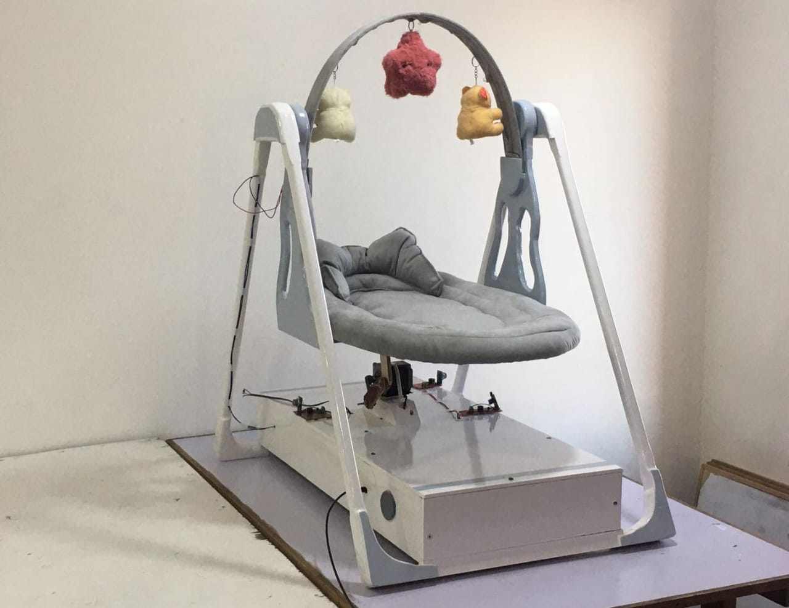
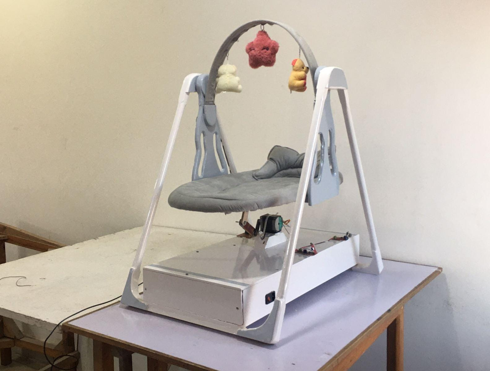
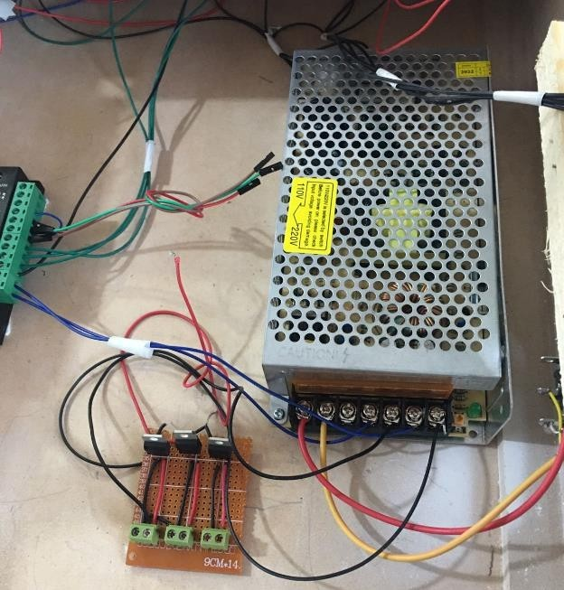
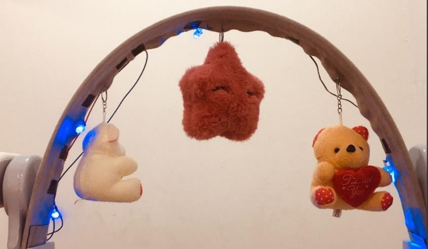
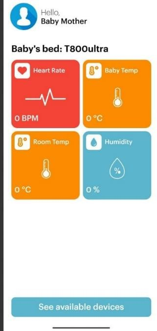

Smart Baby Bed
When a new baby is born, parents often face numerous challenges due to difficulties in communicating with the child and understanding their needs. The baby's frequent crying increases the parents' stress, as they struggle to identify the cause and address the issue affecting the child.
This situation negatively impacts the caregiver. Persistent worry and sleepless nights make it hard for them to perform well at work or carry out daily activities. Over time, this lack of sleep could lead to neglecting responsibilities and even result in job loss.
To address this issue, our team (The Royal Team) decided to develop a solution that tackles these challenges while offering multiple functionalities. Our project introduces a smart baby bed equipped with advanced features. Using artificial intelligence, the bed can analyze the baby's cries to identify the underlying problem and initiate appropriate actions to resolve it.
In this report, we will explore the components of our project, delve into its full details, and explain how it can be effectively utilized.
When the baby starts crying, the artificial intelligence system analyzes the type of cry and classifies it into one of five categories, each indicating a specific issue the baby is facing: belly pain, burping, discomfort, hunger, or tiredness.
If the AI detects that the cause of the crying is discomfort, the smart bed activates gentle vibrations to soothe the baby and help them fall back asleep, eliminating the need for a caregiver's immediate presence.
If the AI identifies tiredness as the cause, the smart bed sends an alert to the caregiver via a connected application. The app provides real-time readings of the baby’s vital signs, including heartbeat, body temperature, ambient temperature, and humidity. If the AI detects a high temperature, it issues an urgent alert to help the caregiver respond promptly.
If the AI classifies the cause of crying as burping, the smart bed initiates vibrations and sends a notification to the application, alerting the caregiver to the issue.
The smart bed also includes safety features to protect the baby. It is equipped with an alarm system that activates during emergencies, such as fires, gas leaks, or smoke. In such cases, the smart bed alerts the caregiver with an audible alarm to ensure the baby’s safety.
Additionally, the smart bed is supported by a website that provides detailed instructions on how to use it, connect to the app, and get started effectively.
Artificial Intelligence
We developed an artificial intelligence model that processes a child's voice, analyzes it, classifies it into five categories (belly pain, burping, discomfort, hunger, or tiredness), and filters out background noise. This component is a fundamental part of the project.
It records the sound for 5 seconds when it senses the baby crying, then stops the recording for 3 seconds, then records for another 5 seconds to ensure that the crying is stable and to determine the classification correctly
power supply
The power supply is the most important main component in the smart bed, and once it is disabled, the project stops working completely. Therefore, it is an electrical transformer that converts the electrical voltage from 220 volts to the valuable voltages that the project and all its parts need in order to function properly, which are (12, 5, and 9) Volt
Movement mechanism
When a baby starts crying, the AI determines that the reason for the crying is discomfort or colic. The smart bed begins to move automatically forward and backward, and the type of movement is slow and appropriate for the child’s age so that the child regains his comfort without the need for a guardian.
Components
1- Raspberry
2-NEMA 23 Stepper Motor
3-TB6600 Stepper Motor Driver
4-12V DC Power Supply
5-Jumper Wires
Measure Heart Rate
It is used in the smart bed to measure the child's heart rate and send the result to the application. (Pulse Sensor) is a finger-mounted heart rate measuring device that relies on light technology originating in blood flow. It contains an LED (green) that sends light to the skin and uses a photodiode to receive the bounced light and when measuring blood, the light does not vary depending on the amount of blood, allowing the heart rate to increase. The sensor outputs signals (analog signals) based on the pulse.
Normal Rate
From birth to one month => From 100 to 160 beats per minute From one month to one year old => From 90 to 150 beats per minute
Measure body temperature
It is used in the smart bed to measure the child’s temperature and send the result to the application. The sensor is used to measure the child’s temperature through 7 places on the body, such as the mouth, under the armpit, and so on, and each place differs from the other by a slight difference Armpit temperatures are usually less accurate than the other two options
Normal Rate
the normal temperature is
1- From the lips( 36.1 to 37.2)
2- From under the armpit( 35.5 to 37)
3- From the ear or anus( 36.6 to 38)
If the newborn’s temperature reaches 38 degrees, this means that he is
infected, and it is recommended to monitor the symptoms and consult a doctor.
x
Lighting control
One of the features of the smart bed is that it contains a set of electronic circuits to create an integrated smart bed that contains lighting and a lighting control circuit via the remote. The guardian can operate the smart bed to start working and control the operation of the bed’s lighting with the remote.
Amplifier
Among the features of the smart bed is that it contains a set of electronic circuits to create an integrated smart bed that contains a speaker. The guardian of the newborn can turn on the speaker to play sounds that suit the child’s age.
A loudspeaker circuit is a group of electronic components that work together to convert weak electrical signals, such as those issued by a computer or music player, into strong electrical signals capable of moving the speaker cone and producing the sound that we hear.
Operating method
First, connect the power cable and press the power button
Place the child on the bed, then place the sensors on him, There are sensors to measure the child’s temperature, heart rate, and blood oxygen levels, along with sensors for gas, fires, and room temperature,The rest of the sensors will be located on the bed
Place the temperature sensor in the child's mouth or under the armpit,As for the heart rate sensor, place it on the child’s head or hand, preferably on his hand
Secondly, install the bed application from here
The application is designed so that you can monitor your child through it
Log in to the application and then connect it to the bed via Bluetooth,as in the video
The application will start warning you if your child's temperature drops below 36 degrees Celsius or exceeds 37.5 degrees Celsius,It will also warn you if the heart rate drops below 100 beats per minute or exceeds 160 beats per minute.
If your child needs medicine, food, drink, or sleep, the application will alert you as well